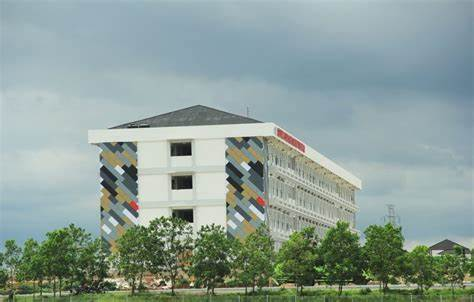
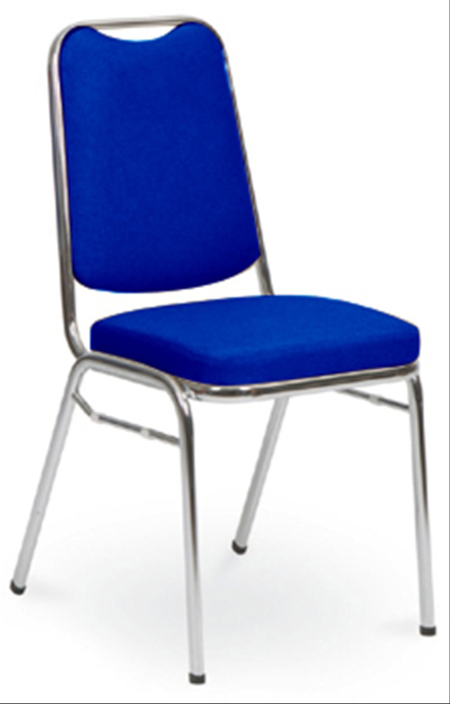
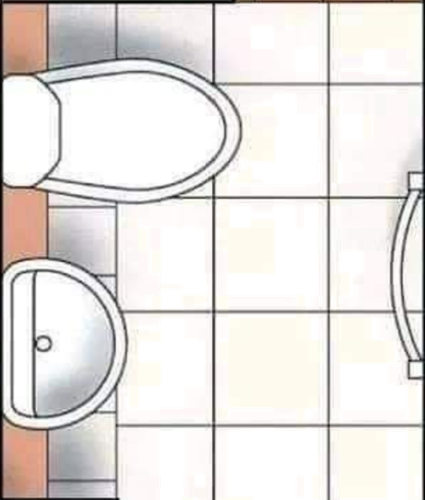
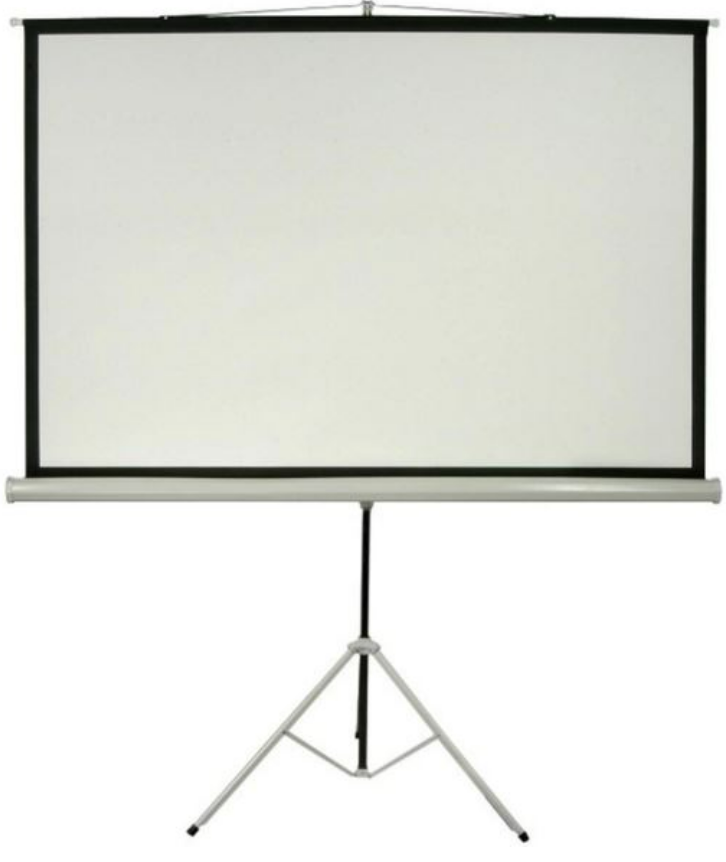
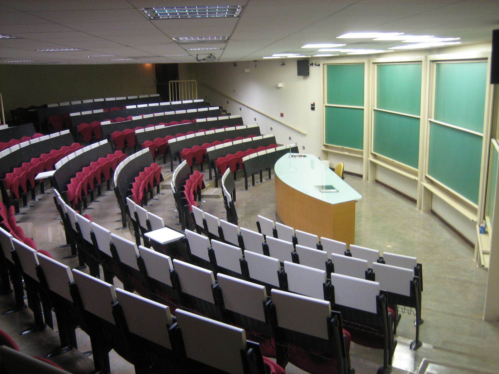
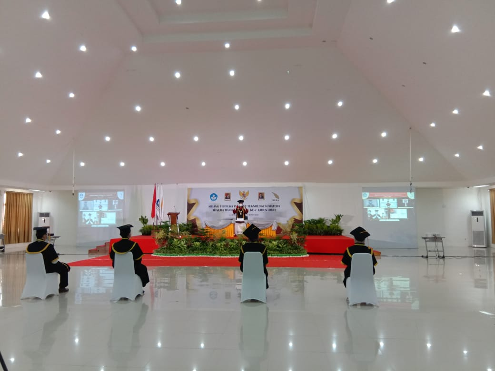

Selamat Datang di ITERA
|
Institut Teknologi Sumatera (ITERA) merupakan perguruan tinggi yang terletak di Jati Agung, Kabupaten Lampung Selatan, Lampung. Kampus ini, memiliki berbagai fasilitas untuk menunjang kegiatan akademik dan non-akademik mahasiswa. Beberapa fasilitas utama yang tersedia meliputi perpustakaan dengan koleksi buku yang lengkap, laboratorium teknik untuk berbagai bidang studi, Aula gedung untuk penyelenggaraan beragam acara, serta ruang kelas yang nyaman dan dilengkapi dengan teknologi terbaru. Selain itu, ITERA juga memiliki sarana olahraga seperti lapangan sepak bola, basket, dan gedung olahraga untuk menunjang kesehatan dan kebugaran mahasiswa. Selain fasilitas akademik, ITERA juga menyediakan berbagai sarana pendukung seperti asrama mahasiswa, pusat kegiatan mahasiswa, serta area kantin dan ruang terbuka hijau yang nyaman. Sarana transportasi internal yaitu Bus Tayo juga tersedia untuk memudahkan mobilitas mahasiswa di dalam kampus. Semua fasilitas ini dirancang untuk menciptakan lingkungan belajar yang kondusif dan mendukung pengembangan mahasiswa baik dalam aspek akademik maupun sosial. Bagi mahasiswa yang ingin meminjam fasilitas di ITERA, terdapat prosedur peminjaman yang harus diikuti. Peminjaman fasilitas atau sarana dan prasarana seperti aula, laboratorium, lapangan olahraga, kursi, proyektor, atau speaker biasanya memerlukan pengajuan permohonan kepada pihak kampus melalui sistem administrasi yang tersedia. Selain itu, terdapat peraturan penggunaan yang harus dipatuhi untuk menjaga keberlanjutan dan kualitas fasilitas yang ada di ITERA. |
Informasi Peminjaman Alat dan Barang
| BARANG | DETAIL BARANG | |||||
|---|---|---|---|---|---|---|
| ID Barang | Nama Barang | Kondisi Barang | Status Barang | Spesifikasi Barang | Stok Barang | |
|  Kursi Kuliah |
SAP100620240001 | Kursi Kuliah | Baik | Ready | Standard | 100 |
|  Speaker Aktif |
JKBJHKHIOHIOHIOHIOH | SpeakerB3-1 | Steady | Ready | Uhun | 10 |
|  Layar Proyektor |
2015090010004 | Layar Proyektor | Baik | Ready | Layar putih, pakai kaki, lebar 2,4m | 2 |
Informasi Peminjaman Ruangan Aula
| RUANGAN | DETAIL RUANGAB | |||||
|---|---|---|---|---|---|---|
| ID Ruangan | Nama Ruangan | Kondisi Ruangan | Status Ruangan | Spesifikasi Ruangan | Stok Ruangan | |
|  Aula GKU |
AULA5 | Aula GKU | Baik | Ready | Test | 10 |
|  Aula GK1 |
AUGK12345678 | AULA GK1 | Steady | Ready | Test | 4 |